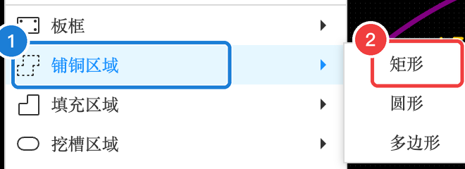
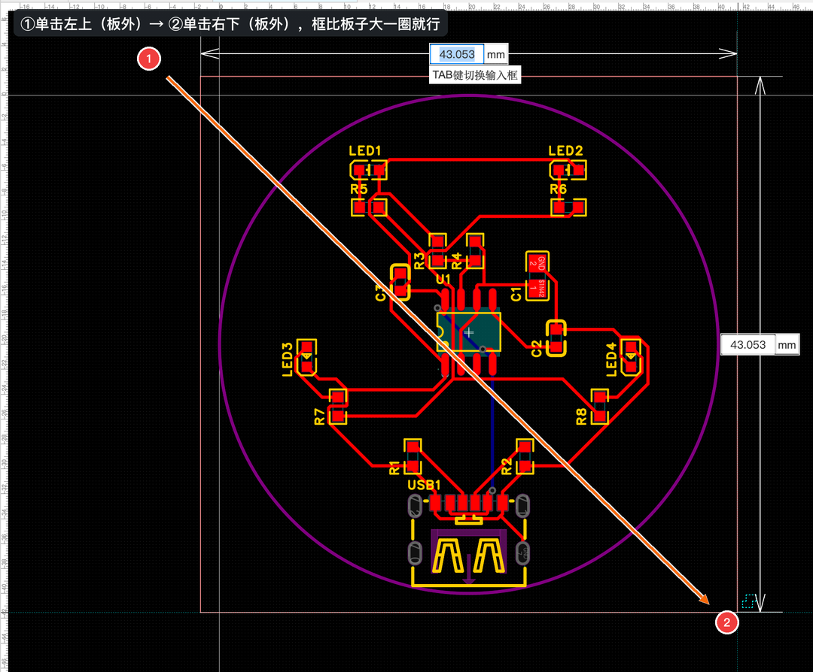
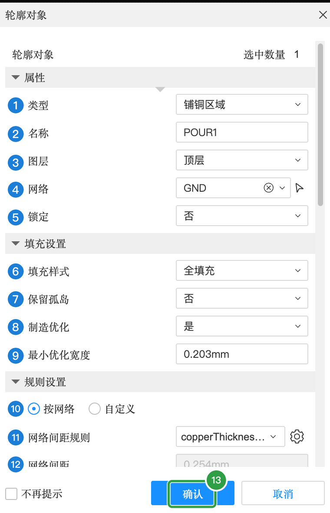
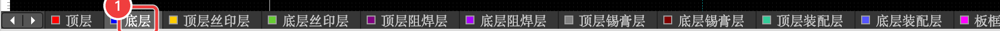
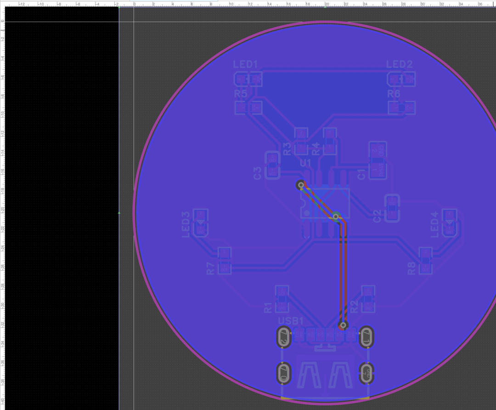

A-7 铺铜（GND）
铺铜就是把板子上空着的地方用一大片铜填满，并接到 GND。正反两面各铺一次，板子更稳定，也更好看。
A7.1 为什么要铺铜#
A7.2 在顶层铺铜#
- 确认当前层是「顶层」
- 点菜单「放置」，鼠标移到「铺铜区域」上，在子菜单里点「矩形」

- 在板子左上方的外面单击一下
- 移到板子右下方的外面再单击。框比板子大一圈就行

不用担心矩形比圆形板子大——铺铜会自动按板框裁成圆形，并且自动避开不同网络的导线和焊盘。
放下后会弹出铺铜属性对话框：

铺铜属性
| 编号 | 属性 | 含义（大白话） | 本例怎么填 | 什么时候需要改 |
|---|---|---|---|---|
| 1 | 类型 | 铺铜区域 | 铺铜区域 | — |
| 2 | 名称 | 这片铺铜的名字 | POUR1（自动） | — |
| 3 | 图层 | 铺在哪一层 | 顶层 | 底层铺铜时是“底层” |
| 4 | 网络 | 这片铜接到哪个网络 | GND（自动填好，一定要检查） | 极少数情况铺 VCC |
| 5 | 锁定 | 锁定后不能被拖动 | 否 | — |
| 6 | 填充样式 | 全填充（实心）或网格 | 全填充 | — |
| 7 | 保留孤岛 | 和 GND 连不上的“铜岛”留不留 | 否（删掉） | — |
| 8 | 制造优化 | 自动去掉太细、工厂做不出来的铜皮碎片 | 是 | — |
| 9 | 最小优化宽度 | 比这还窄的铜皮会被去掉 | 0.203 mm | — |
| 10 | 规则设置：按网络 / 自定义 | 铺铜和其他网络之间的间距，用设计规则里的还是这里自定义 | 按网络 | — |
| 11 | 网络间距规则 | 用哪条间距规则 | copperThickness1oz（默认） | — |
| 12 | 网络间距 | 铺铜离其他网络的铜至少多远 | 0.254 mm | — |
| 到边框 / 槽孔间距 | 铺铜离板边多远（防止切板时露铜） | 默认 | — | |
| 热焊规则：连接方式 | GND 焊盘和铺铜怎么连：「发散」= 用几根小“辐条”连（好焊）；「直连」= 整片连上 | 焊盘：发散（线宽 0.254 mm、90°）；导线：直连 | 大电流焊盘可改直连 | |
| 矩形轮廓 | 起点 X / Y、宽、高、圆角、旋转角度——可以在这里改精确尺寸 | 宽高约 43 mm | — | |
| 不再提示 | 勾上以后放铺铜就不弹这个框了 | 不勾 | — | |
| 13 | 确认 | 应用 | 点它 | — |
A7.3 底层再铺一次#
- 在画布下方的图层快捷栏点「底层」，把当前层切到底层
- 重复上面的步骤：放置 → 铺铜区域 → 矩形 → 两次单击 → 确认（网络 GND，图层 底层，名称 POUR2）

